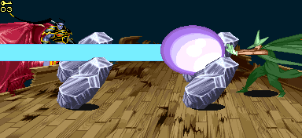

|
|
TEL'ARIN VS MAGIC USER
※ 이 곳의 방법이 공략법의 전부는 아닙니다. 참고는 하되 자신만의 방법을 개발 해 보길 바랍니다.
매직유저의 텔'아린 최단 시간 클리어 기록 : 4:35
강공격(→A) 크리티컬 데미지 vs 텔'아린
전체 HP의 25% 1인 : 약 162 2인 : 약 195 3인 : 약 227 4인 : 약 260
참고사항

위 스샷과 같은 위치에서 플래쉬 투 스톤을 시전하면 스켈레톤을 한번에 처리 할 수 있다. 왼쪽에서도 가능하긴 하지만 스켈레톤이 왼쪽을 바라보고 있는 상태에서 소환되기 때문에 약간이라도 늦으면 점프 공격 이라든가 바로 움직일 가능성이 크기 때문에 오른쪽이 안전하다. 오일을 이용한 기본 공략법
기본 콤보는 'A → 강공격 → A → 강공격'콤보지만 기회가 난다면 '대쉬공격 → 강공격 → A → 강공격 → A'콤보를 넣어서 데미지를 늘릴 수도 있다. 첫 콤보를 이 콤보로 시도 해 보는 것도 좋다.
여하튼 건틀렛이 있다면 콤보 두 세트를 넣고 없다면 콤보를 세 세트를 넣도록 한다. 그 후 오일을 던지고 공격을 넣어준다. 다운 공격이 발동이 안되니 앉아서 공격해야 한다. 건틀렛이 있다면 오일 9개를 다 던지면 영상과 같은 방법으로 마무리를 할 수 있지만 없다면 라이트닝 볼트를 스켈레톤과 엮어서 날려주든지 해서 마무리를 짓도록 하자. * 영상 정보 - 플레이어 crassus / 클리어 시간 4:07 * 단검을 이용한 공략법
단검을 이용해서 빠른 공략을 할 수 있다.
'(대쉬 공격 → 캔슬 백스텝) x 4' 콤보를 4회가 아닌 3회까지만 넣은 후 단검을 3개 던지면 히트 수가 초기화 되서 콤보를 다시 넣을 수 있다. 정리하면 '(대쉬 공격 → 캔슬 백스텝) x 3 → 단검 3개 투척'을 3번 반복 할 수 있다는 뜻인데 영상처럼 HP가 40%이하로 떨어지면 텔'아린이 알아서 도망을 갈 것 이다. 빠른 대신 콤보를 빠르게 구사할 수 있어야 하므로 상급자용 공략법이라 할 수 있다. * 영상 정보 - 플레이어 delty / 클리어 시간 4:35 * 그래도 '하하'콤보 보다는 쉽다. 이 방법이 어렵다면 아래와 같은 방법으로 해 볼 수도 있다. 콤보를 먼저 한 세트 넣고 (건틀렛이 없다면 두 세트를 넣고) 텔'아린이 일어나면 '단검 3개 투척 → A → 강공격'을 3회 반복하는데 마지막 단검 3개를 던지고 나서 공격을 하지말고 가만히 있으면 애니메이트 데드를 시전할 것이다. 이 때를 노려서 라이트닝 볼트로 바꾸고 콤보 한번 넣고 스켈레톤과 엮어서 라이트닝 볼트를 두번 시전한다. 단 두번째 시전 할 때는 스켈레톤 셋까지만 엮도록 한다. - 스켈레톤이 전부 사라지면 또 다시 애니메이트 데드를 시전하기 때문이다. - 그 후 텔'아린의 HP상황에 따라 영상처럼 한대 때려서 마무리 하거나 콤보를 한번 더 넣도록 하자. ※ 혹 단검을 이용해서 콤보를 넣는 중에 텔'아린이 쓰러진다면 텔'아린이 일어난 후 에 단검을 몰아서 던지고 콤보 한 세트를 넣도록 한다. * 영상 정보 - 플레이어 legon / 클리어 시간 4:07 * 매직 미사일의 활용
다크 워리어 공략에서도 나왔지만 텔'아린의 경우도 매직 미사일에 맞아서 공중에 떴을 경우 추가 공격이 가능하다. 타이밍만 잘 맞는다면 영상처럼 콤보를 넣을 때 쓰러뜨리지 않고 세울수도 있다.
타이밍에 자신이 있다면 한번 시도 해 보는 것도 괜찮다. * 영상 정보 - 플레이어 crassus / 클리어 시간 4:13 * * 영상 정보 - 플레이어 crassus / 클리어 시간 2:47 * 파이어로드가 있다면 월오브파이어로 짭짤한 데미지를 볼 수 있다. 딱히 건틀렛과 오일이 없어도 쉽게 할 수 있는 공략. 기본 무기만으로 때려 잡기
매직 유저는 강공격 크리티컬이 나와주지 않는 한 헤이스트를 어쩔 수 없이 봐야 된다. 기본 콤보가 워낙 빈약하기 때문이다.
'A → 강공격 → A → 강공격'을 기본으로 기회가 난다면 '대쉬공격 → 강공격 → A → 강공격 → A'을 써주도록 한다. 스켈레톤을 소환 했다면 기본 A공격으로 툭툭 쳐줘서 먼제 제거하는 것도 좋다. 헤이스트를 시전하는 시점이 되면 D → B → D → B를 이용해서 끝날 때까지 피하도록 한다. 헤이스트가 끝나면 빠져나와서 빈틈을 유도 후 공격하거나 백스텝으로 뒤를 잡아서 공격하면 된다. ★ 헤이스트를 썼을 때의 대처법은 메인 페이지의 헤이스트 분석에 첨부 되어 있다. * 영상 정보 - 플레이어 legon * * 영상 정보 - 플레이어 염산우유 / 클리어 시간 - 4:23* 텔아린이 바로 대점프 베기를 한다는 조건에서 이루어졌다. 만약 대점플르 하지 않고 찌르기패턴이 시작된다면 조금 난처 할수 있다. |